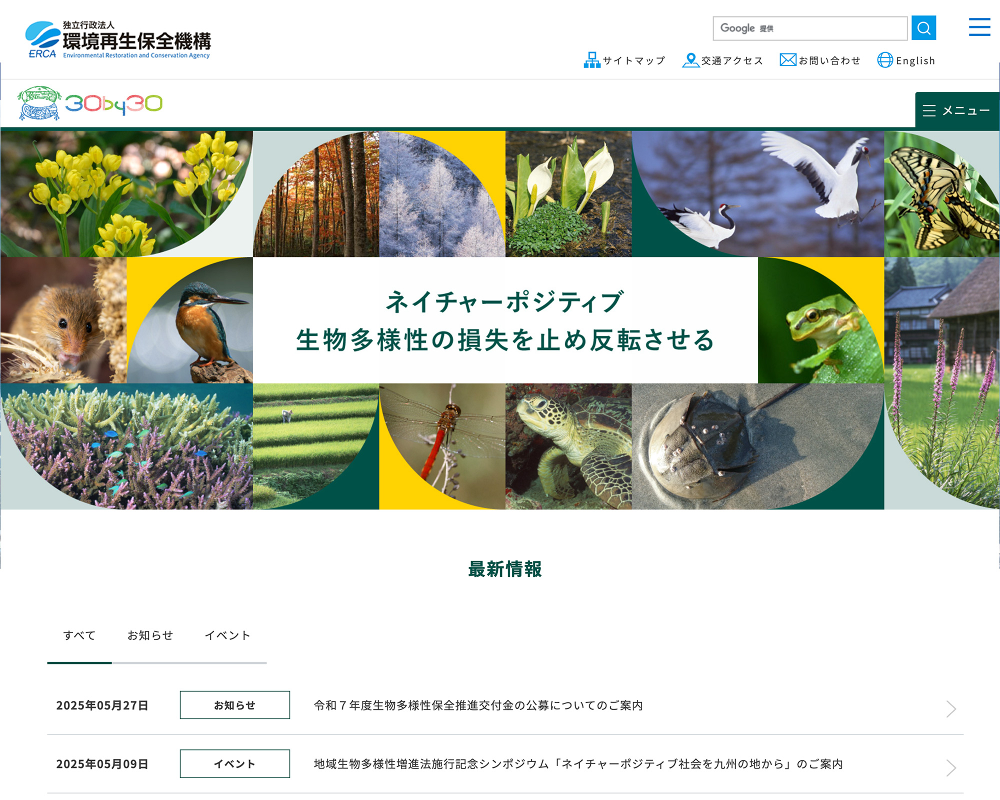

【実務実績】独立行政法人環境再生保全機構 様

環境省が運営していた「30by30」サイトの後継として、自然と共生する社会の実現に向けた制度紹介と申請サポートを目的に開設。クライアントからは、「申請方法へのスムーズな導線を重視したい」という要望があり、情報構成・導線設計に重点を置いたサイト構築を行う。
環境再生保全機構「自然共生サイト（新規）」／2025.3
URL
目的
ユーザーの利用促進
ターゲット
一般、行政、関連企業
デザインコンセプト
自然環境や生物多様性をを感じられるビジュアルと色味を意識。トップページのメインビジュアルでは、写真をコラージュ的に使用し、多様な自然を視覚的に訴求しました。。
担当
デザイン／コーディングン／クライアントとの連携
期間
| デザインカンプ | ：1ヶ月:初校〜3校（XD、Illustrator） |
|---|---|
| コーディング | ：1ヶ月半（HTML／CSS／JavaScript） |
| アクセシビリティ試験後の修正 | ：1週間（主にコーディング部分） |
コーディングについて
エディター ：Visual Studio Code
プログラミング言語 ：HTML／CSS／JavaScript（レスポンシブ対応）
アクセシビリティ試験（AA準拠）※試験管は別の担当者が対応